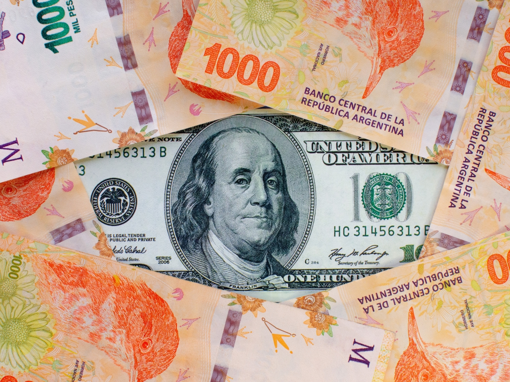

Chau cepo: qué banco tiene mejor tasa de interés para plazo fijo este lunes 14 de abril
El Gobierno decidió eliminar el cepo cambiario y los bancos venden dólares al tipo de cambio oficial, pero también se puede invertir en plazo fijo.
Actualizado 14/04/2025 - 11:22
Mientras el Gobierno decidió eliminar el cepo cambiario y dio lugar a que los bancos vendan dólares en efectivo y de forma digital, el Banco Central de la República Argentina (BCRA) ya lleva un recorte de los pasos pasivos de más de 100 puntos desde iniciada la gestión de Javier Milei.
De esta forma, la tasa de interés de referencia se ubica en torno al 30% con un baja de casi el 40% de las ganancias que otorgaban los plazos fijos con respecto a abril de 2024.
Sin embargo, según un último relevamiento de la autoridad monetaria, las entidades financieras todavía ofrecen dividendos para ahorristas en pesos y que permiten enfrentar el avance de la inflación en el poder adquisitivo ante una liquidez mensual.
Plazo fijo, ¿qué banco paga más?
Desde fines del 2024, los bancos ya operan con las nuevas tasas. Algunos se encuentran por debajo del 30% frente al 110% que otorgaban hasta principios de marzo del año pasado.
| Banco | Tasa de interés |
|---|---|
| Banco Nación | 29% |
| Banco Santander | 28% |
| Banco Galicia | 30% |
| BBVA | 28% |
| Banco Macro | 31% |
Chau plazo fijo: cuáles son las billeteras virtuales con mejor rendimiento
- Ualá: 30%
- Naranja X: 29%
- Personal Pay: 27.4%
- Mercado Pago: 26.8%
¿Qué es el plazo fijo UVA?
El plazo fijo UVA es un método de inversión en ahorro, que está protegido frente a la inflación en Argentina. Esta alternativa brinda un porcentaje de ganancia con base en el Coeficiente de Estabilización de Referencia (CER).
Los últimos datos de la inflación
- 13.2% en febrero
- 11% en marzo
- 8.2% en abril
- 7.6% en mayo
- 4.5% en junio
- 3.4% en julio